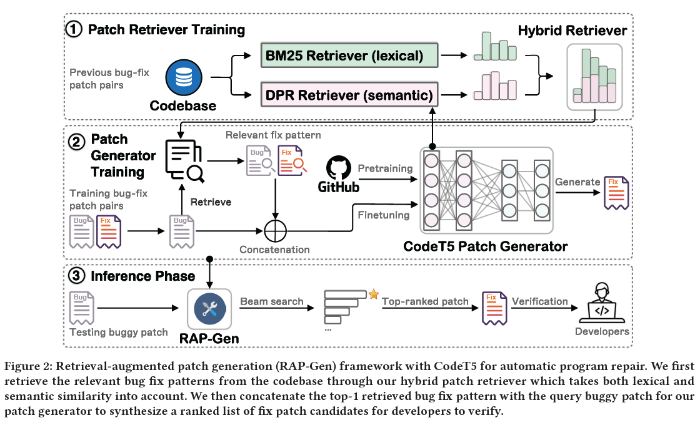
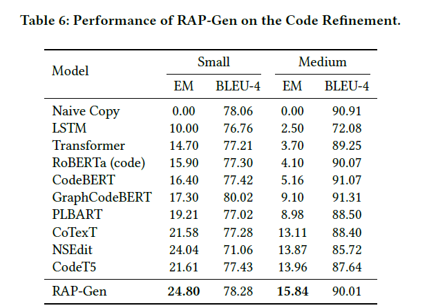
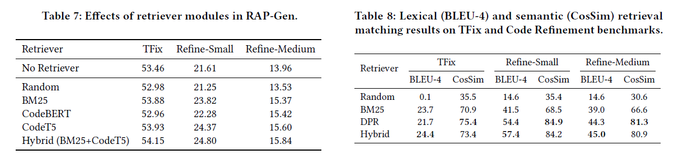

读paper7-RAP-Gen_Retrieval_Augmented_Patch_Generation_with_CodeT5
读paper7-RAP-Gen： Retrieval Augmented Patch Generation with CodeT5
INTRODUCTION
名为RAP-Gen的新型检索增强补丁生成框架，通过从补丁检索器中获取相关的修复模式来增强自动程序修复。
模型在性质上是半参数化的，旨在结合隐式（参数化）端到端程序修复学习和显式（非参数化）修复模式挖掘的双重优势。
与先前的修复模式挖掘工作的区别之一是，我们利用最相关的错误-修复对作为有关错误补丁的指导修复模式，而不是使用手工设计的启发式方法对修复模板进行聚类。
RAP-Gen采用了阶段式学习策略来连接补丁检索器和补丁生成器：补丁检索器首先搜索相关的错误修复模式，然后将其传递给CodeT5补丁生成器，根据源代码和检索的外部错误修复知识合成一个修复补丁候选列表。
对于检索器，我们提出了一种混合方法，通过基于原始源代码的稀疏（BM25 ）和密集（DPR）检索来考虑词法和语义匹配。我们使用CodeT5的编码器作为我们的密集DPR检索器，并提出使用对比学习目标对其进行训练，使用先前的错误-修复对作为修复补丁通常与其错误补丁共享大部分语义。
密集DPR检索器能够捕捉更深层次的代码语义，而基于关键字的稀疏BM25检索器更关注对代码标识符的命名选择敏感的词法相似性。
值得注意的是，混合检索器是与语言无关的，因为它不需要任何特定于代码的特征，例如抽象语法树（ASTs）。
APPROACH

Task Formulation
对于一个程序修复数据集 ，其中包含了 个待修复的错误修复对 ，其中 和 是第 个有错误的程序代码段
此外，对于代码修复知识库，包含了大量的先前的错误修复对，表示为 ，其中 表示第 个之前的错误修复对。
对于给定的 中的程序代码段 ，一个检索器在代码库 中基于相关性评分函数 （由 参数化）检索出最相关的错误修复对 。然后，原始输入序列 与检索到的错误修复对连接，形成新的输入序列 ，其中 表示连接操作。seq2seq生成器随后以自回归方式从 生成 。正式地，我们的目标是通过参数化为 的补丁 seq2seq 生成器学习以下概率：
其中 是第 个标记之前的序列， 表示目标序列 中的标记数量。注意，我们将外部代码库 视为一个非参数化的记忆，并将检索到的错误修复对视为生成器的指导修复模式。从概率的角度来看，检索可以被表示为一个潜在变量 ，在我们的情况下，通过 top-1 近似。形式上，该概率可以被分解为：
其中 是从检索器 检索到的 top-1 结果。我们也尝试使用 top-k(k = 2, 3, 5) 以及 Fusion-in-Decoding 或 FiD 方法，但没有观察到显著的性能改进。
Hybrid Patch Retriever
检索模块旨在检索相关的修复模式，以指导自动程序修复过程。我们采用混合方法，将基于词汇的BM25检索器和基于语义的DPR检索器相结合，以同时考虑词汇和语义信息。之前的工作表明，稀疏和稠密的检索器可以互补，实现更强的文本检索。
即：
是平衡两个检索器的权重
Retrieval-Augmented Patch Generator
给定一个有bug的代码修补补丁 ，我们搜索一个与之相关的优先修复模式 ，并将其传递给修补补丁生成器生成修正后的补丁 。通过将检索到的bug-fix对附加到源有bug的补丁中，将 扩展为 。
CodeT5的编码器以 作为输入，并通过其解码器以自回归方式生成修复的补丁 。采用teacher forcing 来最小化所有训练实例的交叉熵损失
为了避免数据泄露，不允许检索器访问真实的bug-fix对，否则生成器可以直接将检索到的修复复制为目标输出，训练损失将很容易降至接近0。
在推理过程中，采用Beam Search来生成一个按照优先级排列的修复补丁候选列表
Results
我们使用精确匹配（EM）准确率和BLEU-4分数，以评估程序修复性能。BLEU-4是一个较宽松的指标，用于评估子词重叠程度，而EM是一个更严格的指标，要求预测与真实修补程序在真实提交中完全一致。

与其他LLM方案相比，有优势，但不多

表格7中比较了不同的检索模块对检索增强生成方式下的自动程序修复性能的影响。与“无检索器”相比的性能下降表明，随机检索的修复模式不能为自动程序修复提供有用的引导信号。然后，我们将RAP-Gen中的混合检索器与不同的检索器进行了比较：基于BM25的稀疏检索器以及基于CodeBERT或CodeT5的稠密检索器。我们观察到，基于CodeT5的检索器优于基于BM25或CodeBERT的检索器，而我们的混合检索器结合了BM25和CodeT5，在自动程序修复性能上表现最佳，验证了RAP-Gen中检索器模块设计的有效性。
表8显示了我们的检索器在TFix和Code Refinement基准测试上的性能。
对于词汇匹配，BM25在TFix上优于DPR（基于CodeT5的），但在两个Code Refinement子集上表现不佳。我们预计这是由于TFix和Code Refinement之间的数据差异造成的，后者使用了混淆的标识符（如VAR1，VAR2，…），这阻碍了基于词汇的BM25检索器的性能。混合检索器在所有数据集上实现了最佳的词汇匹配，揭示了语义信息可以补充词汇信息。
对于语义匹配，DPR在所有数据集上都取得了最好的结果，这并不令人惊讶，因为它是针对相同目标进行优化的。
值得注意的是，我们的混合检索器的结果稍低于DPR，但比BM25要好得多，这意味着它可以平衡词汇和语义信息，并且比基于词汇的检索器更具鲁棒性，后者对标识符选择敏感。
对于该方案的想法
完全击碎我的想法，我曾认为通过类似RAG（或者直接RAG）的思路对于LLM进行增强会是一个非常不错的方案，即通过在知识库中选择与需要修复的缺陷相同类型或非常近似的某一缺陷修复过程，对LLM的缺陷修复进行指导，会大大提升最终的效果。但这篇论文与我的思路几乎完全一致，但最终效果其实也没有非常好。
不过好处是我认为还有改进的希望，一方面，如何从知识库中选择缺陷修复样例是一个非常关键的点，我希望通过训练一个检索器来完成这一任务，相当于针对某一待修复代码，对所有知识库中的代码与其相似性进行打分，选择 top-k 个修复样例进行指导。
对此有两种想法：
- NLP方案：将代码看作文本序列，采用词嵌入等方式比对整个文本序列相似性。存在一个问题就是一些变量和类名通常是自己命名的，如果要匹配肯定免不了除偏的过程。（论文中采用这种方案，我觉得还是不是很合适）
- AST方案：将代码AST作为匹配依据进行匹配，事实上相当于一个图学习任务。好处就是能够很大程度上避免自定义命名带来的干扰，问题就是，一方面，图学习出名的难收敛，另一方面，同一AST下，不同语言代码是否能够起到很好的指导作用，犹未可知。
补充几点：
- NLP方案中，也很难排除不同语言代码的指导作用问题，不如同一语言代码是肯定的，但是能有多好，就难说了
- 一个非常大的问题就是：数据集不足，所以很难保证同一语言下能搜索到很合适的指导方案，导致最终整体的修复完成度不高。而如果采用其他语言进行指导，就会出现上面提到的性能问题。
- 有一些公开数据集，但时间都比较久了，很难保证这些数据集没有被用作近几年新LLM的训练，所以会有数据泄露问题，但如果选择老LLM，其性能肯定也不如最近发布的LLM（这可能也是这篇paper选择CodeT5的一个原因）
- 有一个想法：由LLM通过修复样例的AST 指导 待修复代码的AST的修复，然后将AST转化为特定语言下的代码。
- 这样好处是可以很大程度上抹平不同语言的语法对修复带来的影响
- 但是还是非常担心多次转换带来的准确度的下降，我自己也不是很看好
另一方面就是考虑将CodeT5换成其他更新的LLM，应该会有性能上的提升，但是还是考虑数据泄露的问题，以及这没啥创新性。
思考和见解
个人认为存在的一些问题：
- 很多情况下，缺陷修复方案并不是只有一种，如果按照标准答案打分，就会造成误判。
- 比如安卓Handler内存泄漏这一经典场景：Handler造成内存泄露的原因，是非静态内部类，或者匿名内部类。使得Handler默认持有外部类的引用。在Activity销毁时，由于Handler可能有未执行完/正在执行的Message。导致Handler持有Activity的引用。进而导致GC无法回收Activity。
- 解决方案可以是Activity销毁时，清空Handler中，未执行或正在执行的Callback以及Message。
- 也可以通过 静态内部类+弱引用 来解决。
- 所以我们不能用一种EM（精确匹配）和BLEU（子词重叠度）的度量方案来评估修复。
- 这个研究似乎对AST有什么偏见，但我认为AST是表达能力最强的语言无关的代码抽象形式，而且几乎没有语言不能抽象为AST
- 使用AST作为修复参考至少能很大程度上缓解数据集不够大所带来的问题